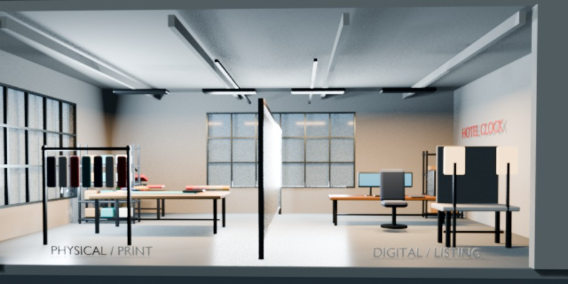
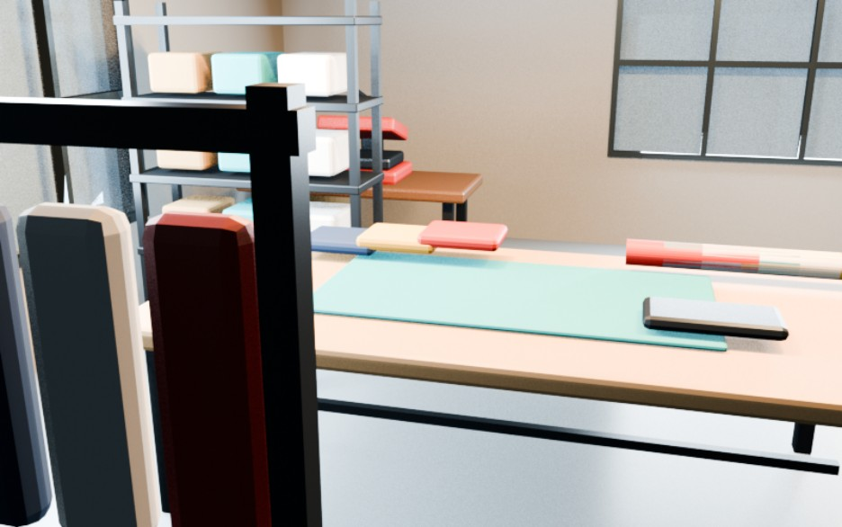
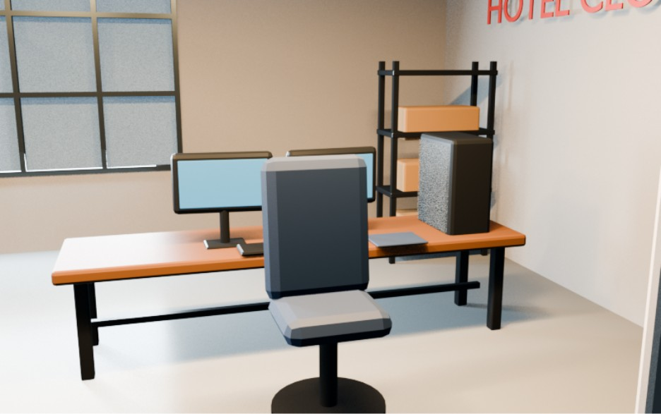
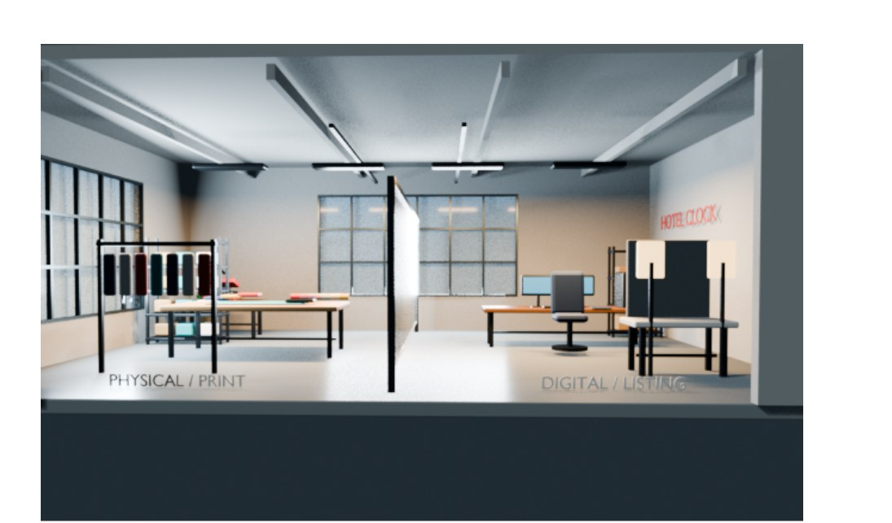

A studio for a small clothing brand, modeled in Blender. A tall divider splits the room in two: a physical and print side for making garments, and a digital and listing side for photographing, editing and selling them online.

Final wide view. Overhead light bars and large factory windows light both zones, and the Hotel Clock sign marks the back wall.
Close-ups

Physical and print side. A garment rack in the foreground, a work table with a cutting mat, and shelves of stock behind.

Digital and listing side. Two monitors on a long desk, with shipping boxes shelved within reach.

Desk detail. Warm orange tabletop against the dark wall to make the screens stand out.